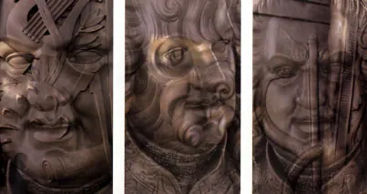
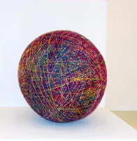
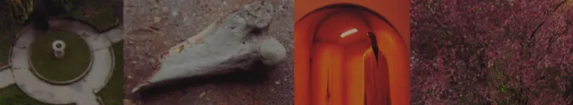
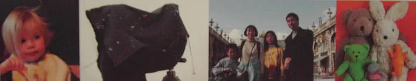

1
La statue et les images-poèmesThe statue and the image-poems
Le travail photographique de Daniel Denise sur la statue de Stanislas ouvre le parcours, avec une série d’images-poèmes où les mots s’inscrivent dans l’image.Daniel Denise’s photographic work on the Stanislas statue opens the visit, along with a series of image-poems in which words are written into the image.

Portraits de la statue de StanislasPortraits of the Stanislas statueDaniel DenisePhotographiesPhotographsDimensions : à compléterDimensions: to be completed

La Vérité diamètre 120La Vérité diamètre 120Daniel DeniseDimensions : à compléterDimensions: to be completed

Candide, image-poèmeCandide, image-poemDaniel DeniseDimensions : à compléterDimensions: to be completed

Regarder, image-poèmeRegarder, image-poemDaniel DeniseDimensions : à compléterDimensions: to be completed